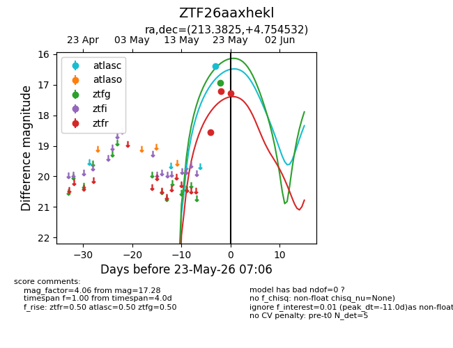
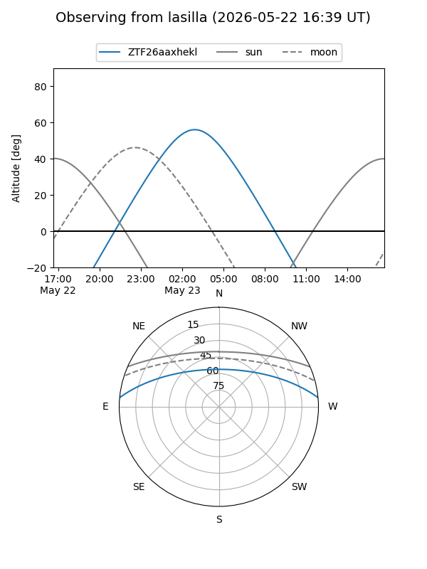
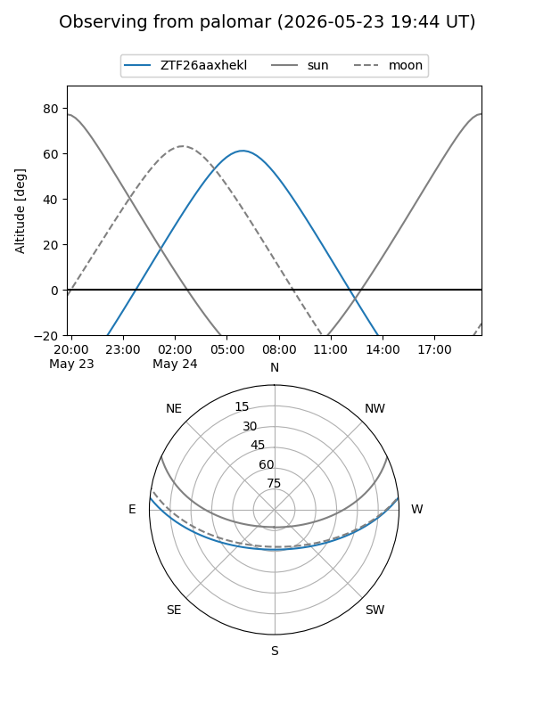
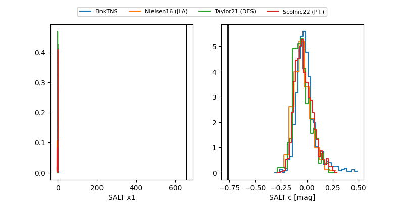

ZTF26aaxhekl
Target ZTF26aaxhekl at 2026-05-23 07:07
Aliases and brokers:
lsst-FINK: link
lsst-Lasair: link
lsst-ALeRCE: link
ztf-FINK: link
ztf-Lasair: link
ztf-ALeRCE: link
alt names
ZTF26aaxhekl (ztf,fink_ztf)
Coordinates:
equatorial (ra, dec) = 213.3825,+4.75453
equatorial (HMS+DMS) = 14:13:31.79,+04:45:16.32
galactic (l, b) = (347.7335,+60.27659)
Flags:
Photometry:
last atlasc=16.38, ztfg=16.94, ztfr=17.28
1 atlasc, 1 ztfg, 3 ztfr detections
Lightcurve

Visibility


Additional plots
